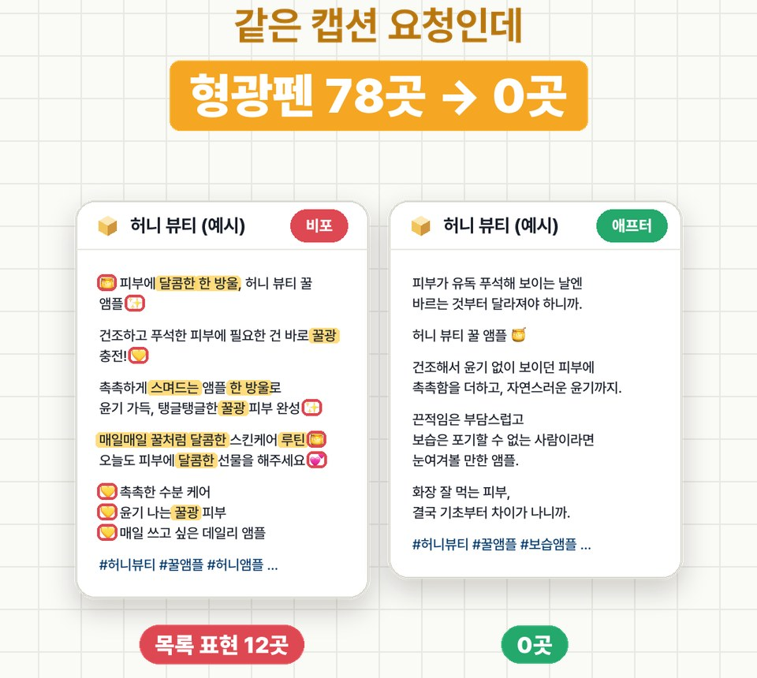

AI로 쓴 글,
첫 줄부터 티 나요
같은 캡션 요청을 ChatGPT · Claude에 새 대화로 10번 시켜 보니, '달콤한' · '한 방울' 같은 말이 10번 중 9번 나왔어요. AI 티는 문장 실력이 아니라 자주 쓰는 말 몇 개에서 나요. 그 말들을 목록으로 주고 한 줄을 붙였더니, 목록 표현이 78번 → 0번이 됐어요.
01AI 말투 목록
"허니 뷰티 꿀 앰플 인스타 캡션 써 줘"를 서비스마다 새 대화로 5번씩 돌리고, 캡션에 자주 나온 말을 셌어요. 10번 중 5번 넘게 나온 것만 넣었고, 제품 설명에 필요한 말(촉촉 · 보습 · 끈적임 없이)은 뺐어요.
AI 말투 목록: - 달콤한 ~ (달콤한 휴식, 달콤한 선물) - 한 방울 - 꿀처럼 ~, 꿀광 - 스며드는 - ~ 루틴 - 매일매일 - ~해 보세요, 만나보세요 - 줄마다 붙는 이모지 - 이모지 달고 세 줄 나열
| 표현 | ChatGPT (5번 중) | Claude (5번 중) | 합계 (10번 중) |
|---|---|---|---|
| 달콤한 ~ (달콤한 휴식, 달콤한 선물) | 5 | 4 | 9 |
| 한 방울 | 4 | 5 | 9 |
| 꿀처럼 ~, 꿀광 | 5 | 4 | 9 |
| 스며드는 | 2 | 4 | 6 |
| ~ 루틴 | 5 | 3 | 8 |
| 매일매일 | 5 | 0 | 5 |
| ~해 보세요, 만나보세요 | 1 | 5 | 6 |
| 줄마다 붙는 이모지 | 5 | 5 | 10 |
| 이모지 달고 세 줄 나열 | 2 | 5 | 7 |
숫자는 그 표현이 들어간 회차 수예요. 계획할 때 떠올렸던 "특별한 경험을 선사합니다"는 10번 중 0번이었어요. 짐작으로 만든 목록보다 직접 센 목록이 맞아요.
- 평소 하는 요청 그대로, 새 대화(임시 채팅)로 5번 돌려요.
- 5번 중 3번 넘게 나온 말과 모양(줄마다 이모지 · 세 줄 나열)을 적어요.
- 제품 설명에 꼭 필요한 말은 빼요. 꿀처럼 · 꿀광은 '꿀' 앰플이라 나온 말이라, 내 제품에선 다른 말이 그 자리에 올 수 있어요.
02요청 문장
요청 · 목록 · 고치기 한 줄을 한 번에 보내요. 이번 시험은 인스타 캡션으로만 했어요. 블로그 글이나 메일에 쓸 땐 그 글로 목록을 다시 세어 보세요.
허니 뷰티 꿀 앰플 인스타 캡션 써 줘. AI 말투 목록: - 달콤한 ~ (달콤한 휴식, 달콤한 선물) - 한 방울 - 꿀처럼 ~, 꿀광 - 스며드는 - ~ 루틴 - 매일매일 - ~해 보세요, 만나보세요 - 줄마다 붙는 이모지 - 이모지 달고 세 줄 나열 다 쓰고 나서, 이 목록에 걸리는 말은 직접 고쳐 줘.
[내 요청 한 줄] AI 말투 목록: - 달콤한 ~ (달콤한 휴식, 달콤한 선물) - 한 방울 - 꿀처럼 ~, 꿀광 - 스며드는 - ~ 루틴 - 매일매일 - ~해 보세요, 만나보세요 - 줄마다 붙는 이모지 - 이모지 달고 세 줄 나열 다 쓰고 나서, 이 목록에 걸리는 말은 직접 고쳐 줘.
Claude는 5번 모두 어디를 고쳤는지 적어 줬어요. 예: "처음 쓴 문장에서 '아침에 두세 방울'이 걸렸어요. '한 방울'과 같은 계열의 표현이라 '스포이트 반 정도 덜어'로 바꿨습니다." ChatGPT는 캡션 아래에 "AI 말투 자가 검수 완료"를 붙였어요.
03비포 · 애프터

비포 · ChatGPT · 그냥 요청(5회차) — 목록 표현 12곳 · 이모지 9개
🍯 피부에 달콤한 한 방울, 허니 뷰티 꿀 앰플 ✨ 건조하고 푸석한 피부에 필요한 건 바로 꿀광 충전! 💛 촉촉하게 스며드는 앰플 한 방울로 윤기 가득, 탱글탱글한 꿀광 피부 완성 ✨ 매일매일 꿀처럼 달콤한 스킨케어 루틴 🍯 오늘도 피부에 달콤한 선물을 해주세요 💕 💛 촉촉한 수분 케어 💛 윤기 나는 꿀광 피부 💛 매일 쓰고 싶은 데일리 앰플 #허니뷰티 #꿀앰플 #허니앰플 #꿀광피부 #물광피부 #피부보습 #수분앰플 #앰플추천 #스킨케어 #피부관리 #뷰티스타그램 #코덕 #뷰티템추천 #데일리케어
애프터 · ChatGPT · 목록 + 고치기 문장(1회차) — 목록 표현 0곳 · 이모지 1개
피부가 유독 푸석해 보이는 날엔 바르는 것부터 달라져야 하니까. 허니 뷰티 꿀 앰플 🍯 건조해서 윤기 없이 보이던 피부에 촉촉함을 더하고, 자연스러운 윤기까지. 끈적임은 부담스럽고 보습은 포기할 수 없는 사람이라면 눈여겨볼 만한 앰플. 화장 잘 먹는 피부, 결국 기초부터 차이가 나니까. #허니뷰티 #꿀앰플 #보습앰플 #피부보습 #기초케어 #스킨케어추천
0410번씩 돌린 결과
| 목록 표현 | 이모지 붙은 줄 | 이모지 세 줄 나열 | |
|---|---|---|---|
| ChatGPT 비포 5번 | 47번 | 31줄 | 2번 |
| Claude 비포 5번 | 31번 | 40줄 | 5번 |
| ChatGPT 애프터 5번 | 0번 | 6줄 | 0번 |
| Claude 애프터 5번 | 0번 | 1줄 | 0번 |
목록에 없던 것도 같이 줄었어요. 느낌표는 10번 합계 11개 → 0개, ChatGPT 해시태그는 한 번에 12~14개 → 6~7개.
05써 보기 전에 알아 둘 점
- 새 반복이 생겨요. ChatGPT 애프터 5번이 모두 "피부가 유독 푸석해 보이는 날"로 시작했어요. 목록은 한 번 만들고 끝이 아니라, 새로 자꾸 나오는 말을 계속 더해요.
- 없는 사실을 지어낼 수 있어요. Claude 애프터에 "30초쯤 지나면", "세안하고 3분", "콩알만큼", "퇴근길까지 당김이 덜해요"처럼 확인 안 된 사용감이 들어갔어요(Claude도 "실제 제품과 다르면 바꿔 주세요"라고 적었어요). 올리기 전에 사실을 확인하거나, 리뷰 · 제품 정보를 같이 주세요.
- 뜻은 그대로였어요. 촉촉함 · 윤기 · 끈적임 없음 · 화장 전에 쓰기 같은 제품 설명은 남고, 광고 문구가 후기처럼 읽히는 말투로 바뀌었어요.
반응 좋았던 우리 캡션 2개를 같이 붙이면 말투 · 길이까지 따라와요. EP.18에서 18번 돌려 본 결과, 잘된 예시 2개를 붙였을 때 바로 쓸 카피가 가장 많았어요.
06어떻게 시험했나
- 2026-10-26 · ChatGPT 웹(Plus · 추론 Medium) 임시 채팅 '개인화되지 않음'(메모리 · 사용자 지정 지침 무시)으로 5번, Claude(Opus 5.5) 시크릿 채팅으로 5번. 매번 새 대화.
- 비포 10번으로 목록을 만든 뒤, 같은 요청 + 목록 + 고치기 한 줄로 애프터 10번.
- 셀 때는 캡션 부분만 봤어요(앞뒤 설명 · 검수 메모 · 해시태그 줄 제외). Claude가 초안과 최종본을 같이 준 답은 최종본만 셌어요.
- 서비스마다 5번씩, 제품 하나(가상 브랜드 '허니 뷰티' 꿀 앰플)로만 해 봤어요.
- Claude는 비포에서 한 번에 캡션 3개(톤별)를, 애프터에서는 1개를 줬어요. 글 양이 달라서, 캡션 1개당으로 보면 2.1번 → 0번이에요.
- 센 것도 정해 둔 말 목록이라, 목록 밖의 AI 티(예: 새 반복 문장)는 숫자에 안 들어가요.
0720건 원문
받은 답 그대로예요(ChatGPT는 '글쓰기' 카드 안 캡션, Claude는 생각 요약 줄만 뺌).
ChatGPT 비포 · 그냥 요청 — 5회 원문
1회차
🍯 꿀처럼 달콤한 피부 광채의 비밀 ✨ 피부가 푸석하고 생기 없어 보이는 날, 허니 뷰티 꿀 앰플로 촉촉함 충전 💛 꿀을 머금은 듯 윤기 있게, 매끈하고 촉촉한 꿀광 피부 완성 🐝✨ 매일매일 빛나는 피부를 위한 나만의 달콤한 스킨케어 루틴 🍯 💛 오늘도 꿀광 피부로 반짝반짝! #허니뷰티 #꿀앰플 #허니앰플 #꿀광피부 #물광피부 #피부보습 #수분앰플 #광채앰플 #스킨케어 #피부관리 #뷰티추천 #데일리케어 #뷰티스타그램
2회차
🍯 꿀처럼 쫀쫀하게, 피부에 달콤한 보습 한 방울 ✨ 푸석하고 건조한 피부에 필요한 건? 바로 **허니 뷰티 꿀 앰플** 💛 촉촉하게 스며드는 수분감부터 은은하게 빛나는 윤광 피부까지 ✨ 매일매일 꿀 바른 듯 촉촉하고 탱글하게! 나만의 달콤한 스킨케어 루틴 🍯🤍 오늘도 꿀광 피부로 반짝여 봐요 💫 #허니뷰티 #꿀앰플 #허니앰플 #꿀광피부 #물광피부 #윤광피부 #보습앰플 #수분앰플 #스킨케어 #피부관리 #뷰티추천 #데일리뷰티 #광채피부
3회차
🍯✨ 피부에 달콤한 꿀 한 방울 💛 건조하고 푸석한 피부에 촉촉한 꿀광 충전! 허니 뷰티 꿀 앰플로 시작하는 달콤한 스킨케어 루틴 🐝 쫀쫀한 보습감으로 피부를 촉촉하게 감싸주고, 은은하게 빛나는 윤광 피부로 ✨ 매일매일 꿀처럼 달콤하게, 피부는 더 촉촉하게 💛 🍯 오늘도 허니 뷰티로 꿀광 케어! #허니뷰티 #꿀앰플 #허니앰플 #꿀광피부 #물광피부 #보습앰플 #수분앰플 #광채피부 #스킨케어 #피부관리 #뷰티추천 #데일리뷰티 #KBeauty
4회차
🍯✨ 꿀처럼 달콤한 피부 케어의 시작! 피부에 촉촉한 꿀 한 방울을 더한 듯 💛 건조하고 푸석한 피부에 촉촉한 보습을 채워주는 **허니 뷰티 꿀 앰플** 🍯 ✨ 촉촉하게 차오르는 수분감 ✨ 윤기 나는 꿀광 피부 ✨ 매일매일 빛나는 피부 컨디션 피부가 지친 날에도, 특별한 관리가 필요한 날에도 꿀처럼 달콤한 보습 루틴으로 💛 오늘부터 나만의 꿀광 피부 루틴 시작해 보세요! 🐝✨ #허니뷰티 #꿀앰플 #허니앰플 #꿀광피부 #꿀광앰플 #보습앰플 #수분앰플 #피부관리 #스킨케어 #광채피부 #데일리스킨케어 #뷰티추천
5회차
🍯 피부에 달콤한 한 방울, 허니 뷰티 꿀 앰플 ✨ 건조하고 푸석한 피부에 필요한 건 바로 꿀광 충전! 💛 촉촉하게 스며드는 앰플 한 방울로 윤기 가득, 탱글탱글한 꿀광 피부 완성 ✨ 매일매일 꿀처럼 달콤한 스킨케어 루틴 🍯 오늘도 피부에 달콤한 선물을 해주세요 💕 💛 촉촉한 수분 케어 💛 윤기 나는 꿀광 피부 💛 매일 쓰고 싶은 데일리 앰플 #허니뷰티 #꿀앰플 #허니앰플 #꿀광피부 #물광피부 #피부보습 #수분앰플 #앰플추천 #스킨케어 #피부관리 #뷰티스타그램 #코덕 #뷰티템추천 #데일리케어
ChatGPT 애프터 · 목록 + 고치기 문장 — 5회 원문
1회차
피부가 유독 푸석해 보이는 날엔 바르는 것부터 달라져야 하니까. 허니 뷰티 꿀 앰플 🍯 건조해서 윤기 없이 보이던 피부에 촉촉함을 더하고, 자연스러운 윤기까지. 끈적임은 부담스럽고 보습은 포기할 수 없는 사람이라면 눈여겨볼 만한 앰플. 화장 잘 먹는 피부, 결국 기초부터 차이가 나니까. #허니뷰티 #꿀앰플 #보습앰플 #피부보습 #기초케어 #스킨케어추천
2회차
피부가 유독 푸석해 보이는 날, 괜히 이것저것 더 바르게 되잖아요. 그럴 땐 복잡하게 생각하지 않고 허니 뷰티 꿀 앰플 🍯 촉촉하면서도 답답하지 않은 마무리, 피부에 은은하게 올라오는 윤기까지. 화장 전에 발라도 좋고, 건조함이 신경 쓰이는 저녁에도 자꾸 손이 가는 아이템. 요즘 화장대에서 가장 자주 꺼내 쓰는 이유 🤍 #허니뷰티 #꿀앰플 #보습앰플 #수분케어 #피부윤기 #스킨케어추천
3회차
피부가 유독 푸석하고 생기 없어 보이는 날, 괜히 화장도 마음에 안 들잖아요. 그럴 때 손이 가는 허니 뷰티 꿀 앰플 🍯 촉촉하면서도 답답하지 않은 사용감에 피부에 은은하게 감도는 윤기까지. 과하게 번들거리는 느낌 말고, 원래 피부가 좋아 보이는 그런 윤기. 피부 컨디션이 아쉬운 날에도 화장대에서 먼저 찾게 되는 이유. #허니뷰티 #꿀앰플 #앰플추천 #보습케어 #피부윤기 #기초화장품
4회차
피부가 유독 푸석해 보이는 날엔 기초부터 조금 더 신경 쓰게 되죠. 허니 뷰티 꿀 앰플 🍯 촉촉하면서도 윤기 있게 마무리되는 피부 표현. 건조해서 생기 없어 보이던 피부에 자연스러운 윤기를 더해주는 앰플이에요. 과하게 번들거리는 느낌보다는 피부 결이 차분하게 정돈된 듯한 마무리가 마음에 들어요. 화장 잘 먹는 피부, 결국 기초에서 차이가 나니까. #허니뷰티 #꿀앰플 #보습앰플 #앰플추천 #기초케어 #피부윤기 #스킨케어
5회차
피부가 유독 푸석해 보이는 날엔 기초부터 신경 쓰게 되더라고요. 요즘 손이 자주 가는 허니 뷰티 꿀 앰플 🍯 촉촉한 피부 표현을 좋아한다면 눈여겨볼 만한 제품이에요. 화장 전에 발라주기에도 좋고, 건조함이 신경 쓰이는 날엔 더 찾게 되는 앰플. 피부 컨디션이 아쉬운 날, 기초 제품 하나에도 신경을 쓰게 되는 이유. #허니뷰티 #허니뷰티꿀앰플 #꿀앰플 #앰플추천 #기초케어 #보습케어 #스킨케어
Claude 비포 · 그냥 요청 — 5회 원문
1회차
꿀 앰플 제품의 인스타그램 캡션 작성 중. 꿀 앰플 제품의 인스타그램 캡션 작성 중. 제품 정보를 아직 모르니 일반적인 꿀 앰플 콘셉트(보습·윤기·영양)로 톤이 다른 세 가지 버전을 써 봤어요. 1. 감성 무드형 🍯 피부에도 달콤한 휴식이 필요할 때 하루 끝, 건조하고 지친 피부 위로 꿀처럼 진하게 스며드는 한 방울. 아침까지 이어지는 촉촉함을 느껴보세요. 허니 뷰티 꿀 앰플 ✨ #허니뷰티 #꿀앰플 #보습앰플 #꿀광피부 #스킨케어 #데일리앰플 #속건조 #윤광피부 2. 정보 전달형 건조한 가을, 피부 속까지 채우는 꿀 보습 🐝 ✔️ 꿀 성분으로 촉촉하게 ✔️ 끈적임 없이 산뜻한 흡수 ✔️ 아침 메이크업 전에도 OK 세안 후 2~3방울, 얼굴 전체에 부드럽게 펴 발라주세요. 📍 구매는 프로필 링크에서 #허니뷰티 #꿀앰플 #가을스킨케어 #환절기보습 #앰플추천 #수분앰플 #피부결 3. 짧고 위트 있는 형 피부한테 꿀 발라줬어요 🍯 오늘부터 내 별명은 꿀피부. #허니뷰티 #꿀앰플 #꿀피부 #윤광 #스킨케어추천 참고로 화장품 광고에서는 "주름 개선", "미백" 같은 기능성 표현은 식약처 기능성 인증을 받은 제품에만 쓸 수 있고, "치료", "재생" 같은 의학적 표현은 피하는 게 안전해요. 주요 성분이나 효능, 할인 이벤트, 타깃 연령대를 알려주시면 그에 맞춰 더 구체적으로 다듬어 드릴게요. 어떤 버전 방향이 가장 마음에 드세요?
2회차
꿀 앰플 인스타그램 홍보 문구 작성 중. 꿀 앰플 인스타그램 홍보 문구 작성 중. 허니 뷰티 꿀 앰플 인스타 캡션, 분위기별로 세 가지 준비했어요. 1. 감성 무드형 꿀처럼 스며드는 촉촉함 🍯 건조한 가을밤, 피부에도 달콤한 휴식을 선물하세요. 한 방울로 시작하는 꿀광 루틴 ✨ 허니 뷰티 꿀 앰플 👉 프로필 링크에서 만나보세요 #허니뷰티 #꿀앰플 #꿀광피부 #수분앰플 #가을스킨케어 #속건조 #데일리앰플 #스킨케어루틴 2. 정보 전달형 요즘 피부 당김 느껴진다면? 🙋♀️ 허니 뷰티 꿀 앰플이 답이에요. 🍯 꿀 성분이 담긴 진득한 텍스처 💧 끈적임 없이 쏙 흡수되는 마무리 ✨ 화장 전에 발라도 촉촉한 꿀광 연출 세안 후 토너 다음, 2~3방울을 얼굴에 펴 바르고 가볍게 두드려 흡수시켜 주세요. #허니뷰티 #꿀앰플 #앰플추천 #환절기스킨케어 #보습앰플 #꿀피부 3. 참여 유도형 (짧고 캐주얼) 꿀 바른 듯한 피부결, 이거 하나면 끝 🍯✨ 여러분의 가을 최애 앰플은 뭔가요? 댓글로 알려주세요 👇 #허니뷰티 #꿀앰플 #오늘의스킨케어 #꿀광 참고로 "주름 개선"이나 "미백" 같은 기능성 표현은 해당 기능성 인증을 받은 경우에만 쓰는 게 안전하니, 제품 인증 여부에 맞춰 문구를 조정하시면 돼요. 주요 성분(예: 마누카 꿀, 프로폴리스 등)이나 이벤트·할인 정보가 있으면 알려주세요. 그에 맞춰 더 구체적으로 다듬어 드릴게요.
3회차
허니 뷰티 꿀 앰플 홍보 문구 작성 중. 허니 뷰티 꿀 앰플 홍보 문구 작성 중. 허니 뷰티 꿀 앰플 캡션을 분위기별로 세 가지 써 봤어요. 1. 감성/무드형 꿀처럼 천천히, 깊게 스며드는 윤기 🍯 건조한 가을 바람에 지친 피부에 한 방울의 달콤한 휴식을 선물하세요. 허니 뷰티 꿀 앰플 ✨ 아침엔 촉촉하게, 밤엔 탱글하게. #허니뷰티 #꿀앰플 #꿀광피부 #보습앰플 #가을스킨케어 #속광 #데일리앰플 2. 정보/설득형 환절기 피부, 속당김 느끼고 계신가요? 🍂 🍯 끈적임 없이 가볍게 흡수되는 텍스처 💧 바르자마자 차오르는 촉촉함 ✨ 메이크업 전에 발라도 밀림 없는 꿀광 세안 후 2~3방울, 손바닥으로 지그시 눌러 흡수시켜 주세요. 지금 프로필 링크에서 만나보세요! #허니뷰티 #꿀앰플 #환절기보습 #수분앰플 #물광피부 #스킨케어추천 3. 짧고 위트 있는 형 피부한테 꿀 발랐어요 🍯 오늘 광 좀 나죠? 허니 뷰티 꿀 앰플로 완성한 꿀광 루틴 ✨ #허니뷰티 #꿀앰플 #꿀피부 #광채피부 #오늘의스킨케어 제품의 실제 핵심 성분(예: 마누카 꿀, 프로폴리스 함량)이나 이벤트·할인 정보를 알려주시면 그걸 넣어서 더 구체적으로 다듬어 드릴게요.
4회차
꿀 앰플 인스타그램 캡션 작성 중. 꿀 앰플 인스타그램 캡션 작성 중. 허니 뷰티 꿀 앰플 캡션 세 가지 톤으로 준비했어요. 1. 감성 무드형 쌀쌀해진 10월 밤, 피부에도 꿀 한 스푼 🍯 하루 끝에 톡톡 두드려 주는 허니 뷰티 꿀 앰플. 촉촉함이 오래 머무는 저녁 루틴, 오늘부터 시작해 보세요. #허니뷰티 #꿀앰플 #가을스킨케어 #보습앰플 #데일리루틴 2. 발랄 MZ형 피부가 "나 목말라…" 할 때 🥺 👉 꿀 앰플 한 방울이면 끝! 끈적임은 빼고 촉촉함만 남겼어요 🐝💛 환절기 건조함, 이번엔 꿀로 막아보자고요! #허니뷰티 #꿀앰플 #꿀피부 #환절기필수템 #속보습 3. 정보 전달형 🍯 허니 뷰티 꿀 앰플, 이렇게 사용하세요 ✔️ 세안 후 토너로 결 정리 ✔️ 앰플 2~3방울을 덜어 얼굴 전체에 펴 바르기 ✔️ 손바닥으로 지그시 눌러 흡수시키기 건조한 날엔 크림에 한 방울 섞어도 좋아요! #허니뷰티 #꿀앰플 #앰플추천 #스킨케어루틴 #보습케어 주요 성분(예: 마누카 꿀, 프로폴리스 함량)이나 진행 중인 이벤트·할인 정보를 알려 주시면 그 내용을 넣어서 더 구체적으로 다듬어 드릴게요.
5회차
꿀 앰플 인스타그램 홍보 문구 작성 준비 중. 꿀 앰플 인스타그램 홍보 문구 작성 준비 중. 톤별로 세 가지 써 봤어요. 제품 정보를 몰라서 꿀 앰플에 흔한 보습과 윤기 위주로 썼으니, 실제 성분이나 용량에 맞게 바꿔 주세요. 1. 감성 / 무드형 건조한 계절, 피부에도 달콤한 휴식이 필요할 때 🍯 한 방울 톡, 손끝에서 녹아드는 꿀 한 스푼의 촉촉함. 속부터 차오르는 윤기로 하루를 마무리해 보세요. 허니 뷰티 꿀 앰플 ✨ #허니뷰티 #꿀앰플 #꿀광피부 #수분앰플 #보습앰플 #가을스킨케어 #데일리스킨케어 2. 정보 / 루틴 제안형 찬바람 불면 당기는 피부, 이렇게 케어해요 🍯 ✔️ 세안 후 토너로 피부결 정돈 ✔️ 꿀 앰플 2~3방울을 손바닥에 덜어 얼굴 전체에 꾹꾹 ✔️ 크림으로 마무리하면 촉촉함이 더 오래가요 끈적임 없이 쏙 스며드는 꿀 보습, 허니 뷰티 꿀 앰플로 시작해 보세요. #허니뷰티 #꿀앰플 #스킨케어루틴 #건성피부 #환절기스킨케어 #앰플추천 #꿀광 3. 짧고 위트 있는 형 피부한테 꿀 발라 줄 시간 🍯🐝 바르는 순간 꿀광 ON. 허니 뷰티 꿀 앰플 #허니뷰티 #꿀앰플 #꿀피부 #물광피부 #오늘의스킨케어 참고로, 광고 캡션이라면 "재생", "치료", "주름 개선" 같은 표현은 기능성 인증이 없으면 화장품 광고 규정에 걸릴 수 있어서 일부러 넣지 않았어요. 할인이나 이벤트 문구, 주요 성분(예: 마누카 꿀, 프로폴리스)이 있으면 알려 주세요. 맞춰서 다시 다듬어 드릴게요.
Claude 애프터 · 목록 + 고치기 문장 — 5회 원문
1회차
초안 캡션 작성 후 금지어 자체 점검 중 초안 캡션 작성 후 금지어 자체 점검 중 꿀 앰플이라고 하면 다들 끈적일 것부터 걱정하시더라고요. 허니 뷰티 꿀 앰플은 손등에 펴 보면 생각보다 묽게 퍼지고, 30초쯤 지나면 겉도는 느낌 없이 정리돼요. 위에 크림을 올려도 밀리지 않고요. 히터 켜기 시작하는 요즘, 오후만 되면 볼이 당기는 분들 많죠. 아침에 스포이트 반 정도 덜어 바르고 나가면 퇴근길까지 그 당김이 훨씬 덜해요. [주요 성분 / 용량 / 가격] 자세한 건 프로필 링크에 있어요. #허니뷰티 #꿀앰플 #건조피부 #수분앰플 목록과 대조해 보니 처음 쓴 문장에서 "아침에 두세 방울"이 걸렸어요. "한 방울"과 같은 계열의 표현이라 "스포이트 반 정도 덜어"로 바꿨습니다. 마지막 안내도 "확인해 보세요"로 끝나기 쉬운 자리라 "프로필 링크에 있어요"로 맺었고, 이모지는 줄마다 붙이지 않고 아예 빼서 해시태그만 남겼어요. 달콤한, 꿀처럼/꿀광, 스며드는, 루틴, 매일매일은 쓰지 않았습니다. 대괄호 부분에는 실제 성분과 가격을 넣어 주세요. "퇴근길까지 당김이 덜하다"는 효과 표현이라, 실제 사용 후기나 테스트 근거가 없으면 "바르고 나간 날은 오후가 편했다는 후기가 많아요"처럼 후기 기반으로 바꾸는 게 안전해요.
2회차
초안 작성 후 금지 표현 점검 및 수정 중 초안 작성 후 금지 표현 점검 및 수정 중 허니 뷰티 꿀 앰플 캡션 세안하고 수건으로 얼굴을 닦는 순간, 볼이 당기기 시작하죠. 10월 밤엔 그 몇 초가 유난히 길어요. 허니 뷰티 꿀 앰플은 그 몇 초를 줄이려고 만들었어요. 꿀 추출물을 담았지만 끈적이지 않게 묽게 잡았고, 펴 바르고 조금 지나면 손바닥에 묻어나지 않아요. 토너 다음에 스포이트 반만큼, 그 위에 평소 쓰던 크림. 더 할 건 없어요. 요즘 볼이 푸석하다면, 이 글 저장해 두면 쓸 데가 있을 거예요. #허니뷰티 #꿀앰플 #앰플추천 #건조피부 #가을스킨케어 목록 점검하면서 고친 부분 처음 쓸 때 사용법을 "토너 다음에 두세 방울"로 적었는데, '한 방울'과 같은 계열의 표현이라 "스포이트 반만큼"으로 바꿨어요. 마지막 문장도 처음엔 "저장해 두고 다음 세안 때 떠올려 주세요"였는데, ‘~해 보세요'처럼 권유로 끝나는 말투와 같은 결이라 "저장해 두면 쓸 데가 있을 거예요"로 바꿨습니다. 나머지 항목(달콤한 ~, 꿀처럼/꿀광, 스며드는, ~ 루틴, 매일매일, 만나보세요)은 들어가지 않았고, 이모지는 아예 빼서 줄마다 붙거나 세 줄 나열이 되는 문제도 없어요. 하나 확인해 주실 것은 제형 설명이에요. "묽다", "손바닥에 묻어나지 않는다"는 제가 제품 정보 없이 쓴 부분이라, 실제 사용감과 다르면 그 문장만 맞게 고치시면 됩니다.
3회차
꿀 앰플 인스타그램 캡션 작성 중. 꿀 앰플 인스타그램 캡션 작성 중. 허니 뷰티 꿀 앰플 캡션 10월 말, 세안하고 3분만 지나도 볼이 당기는 계절. 허니 뷰티 꿀 앰플은 손등에 덜면 물처럼 흐르지 않고 쭉 늘어나요. 그런데 펴 바르면 생각보다 얇게 정리되고, 위에 크림을 올려도 밀리지 않아요. 순서는 스킨 다음, 크림 전. 볼처럼 유난히 당기는 곳엔 한 번 더 덧바르면 돼요. #허니뷰티 #꿀앰플 #건조피부 #환절기스킨케어 목록 점검 결과 초안에서 한 군데가 걸려서 고쳤습니다. 마지막 문장을 "한 번 더 겹쳐 발라 보세요"로 썼는데, ‘~해 보세요'에 해당해서 "덧바르면 돼요"로 바꿨어요. 권유 대신 사용법을 그냥 알려주는 말투라 덜 광고처럼 들립니다. 나머지 항목은 걸리는 말이 없어요. '달콤한', '한 방울', '꿀처럼/꿀광', '스며드는'은 쓰지 않았고, '아침 루틴' 대신 "스킨 다음, 크림 전"이라고 순서를 직접 적었어요. '매일매일'과 '만나보세요'도 없고, 이모지는 아예 빼서 줄마다 붙거나 세 줄 나열이 되는 문제도 없습니다. 참고로 "쭉 늘어나는 제형", "크림을 올려도 밀리지 않음" 같은 사용감 묘사는 제가 제품을 모르는 상태에서 넣은 것이라, 실제 제품 특징에 맞게 바꿔 주세요. 실제 성분이나 사용감을 알려주시면 그걸로 다시 써 드릴게요.
4회차
초안 작성 후 AI 티 나는 표현 점검 및 수정 중 초안 작성 후 AI 티 나는 표현 점검 및 수정 중 초안 10월 말, 세안하고 나면 볼이 당기기 시작하는 시기. 허니 뷰티 꿀 앰플은 손등에 덜면 꿀처럼 천천히 흐르는데, 얼굴에 펴 바르면 끈적임 없이 피부에 스며들어요. 아침엔 토너 다음 두 방울, 밤엔 크림 전에 세 방울. 건조한 계절, 피부에 달콤한 휴식을 선물해 보세요. 목록에 걸린 말 초안에서 걸린 말과 고친 내용은 이렇습니다. 꿀처럼: 꿀 제품을 꿀에 빗대면 정보가 없어서, 실제 질감 묘사로 바꿨습니다. 스며들어요: 바른 뒤 어떻게 마무리되는지로 바꿨습니다. 두 방울 / 세 방울: '한 방울'과 같은 계열이라 양을 다르게 표현했습니다. 달콤한 휴식: 문장째 뺐습니다. 선물해 보세요: 구체적인 행동 안내로 바꿨습니다. 최종본 10월 말, 세안하고 몇 분만 지나도 볼이 당기는 때. 허니 뷰티 꿀 앰플은 손등에 덜면 천천히 늘어질 만큼 꾸덕해요. 그런데 얼굴에 펴 바르면 끈적이지 않고 가볍게 마무리돼요. 아침엔 토너 다음에, 밤엔 크림 바르기 전에 콩알만큼. 아침에 덜 당기는 피부가 궁금하다면 프로필 링크에서 확인하세요. #허니뷰티 #꿀앰플 #앰플추천 #건조피부 #가을스킨케어 이모지는 줄마다 붙이지 않았습니다. 넣고 싶다면 첫 줄이나 마지막 줄에 하나만 넣는 게 자연스럽습니다. 질감과 사용 순서는 제가 가정한 내용이라, 실제 제품과 다르면 그 부분만 바꿔 주세요.
5회차
꿀 앰플 인스타그램 캡션 작성 중. 꿀 앰플 인스타그램 캡션 작성 중. 초안 건조한 가을, 당기는 피부에 달콤한 휴식을 🍯 허니 뷰티 꿀 앰플 한 방울이면 꿀처럼 스며드는 촉촉함 ✨ 매일매일 아침 루틴에 더해 보세요 💛 🍯 끈적임 없는 보습 ✨ 은은한 꿀광 💛 속까지 촉촉하게 지금 만나보세요! 목록에 걸린 부분 초안에서는 "달콤한 휴식", "한 방울", "꿀처럼", "꿀광", "스며드는", "루틴", "매일매일", "더해 보세요", "만나보세요"가 걸렸습니다. 이모지도 줄마다 붙어 있었고, 이모지를 단 세 줄 나열도 있었어요. 거의 모든 줄이 걸려서 문장을 고치지 않고 새로 썼습니다. 막연한 수식어 대신 실제로 바를 때 느끼는 장면을 넣었고, 이모지는 링크 안내에만 하나 남겼어요. 수정본 세수하고 3분만 지나도 볼이 당기는 계절이 왔어요. 허니 뷰티 꿀 앰플은 손등에 남은 것까지 아까워서 목에 문지르게 되는 제형이에요. 쫀쫀한데 끈적이지는 않아서 바로 위에 크림을 올려도 밀리지 않고요. 오후에 거울을 봐도 아침에 바른 게 아직 피부에 남아 있는 느낌이 들어요. 볼에 각질이 일어나기 시작했다면 앰플을 바꿀 때가 된 거예요. 👉 구매는 프로필 링크에서 #허니뷰티 #꿀앰플 #가을보습 #속건조 #앰플추천 제품 정보를 받지 못해서 성분이나 용량 같은 구체적인 내용은 넣지 않았어요. 주요 성분이나 진행 중인 이벤트가 있으면 알려 주세요. 둘째 문단에 자연스럽게 넣어 드릴게요.
08출처
- 2026-10-26 ChatGPT(Plus) · Claude로 직접 시험한 결과예요.
- 영상 속 캡션은 실제 AI 답이고, 소재는 가상 브랜드 '허니 뷰티'예요.
대행사에서 AI 교육하는 현직 마케터가 직접 써 보고 정리해요.
인스타에서 팔로우